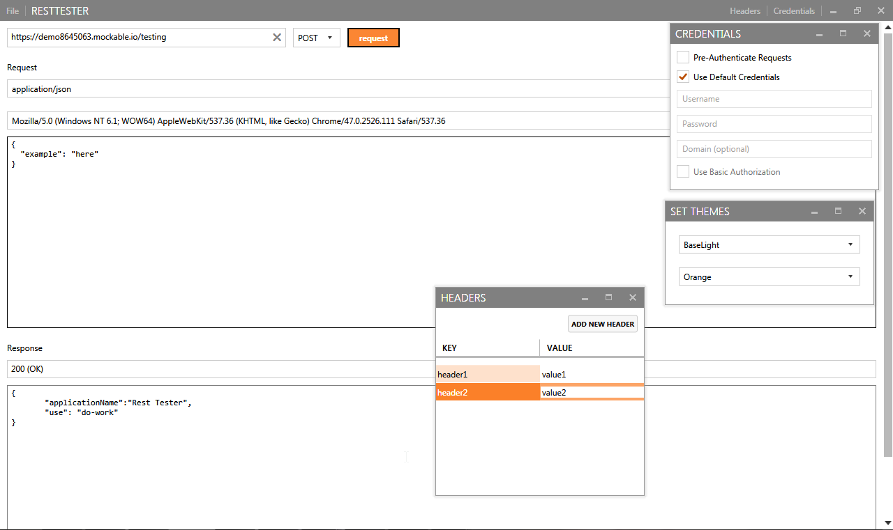

Rest Tester
A simple tool for testing rest url routes. It is a basic http client so you can use it to test other web requests as well.
The following functionality has been created so far:

- Send web requests via the Http Verbs (get, post, put, delete, etc)
- Add a body for requests other than get
- Authorization via NetworkCredential or Basic Authorization
- Custom headers
- User-Agent and Content-Type settings
- Automatic JSON beautify for JSON request bodies
- Response status code information
- Custom theming
Authors and Contributors
Built by @weeksdev. Feel free to use for whatever your purposes. If you see any issues or would like to add features please feel free to do so and send me a pull request. I'd like to make this a goto http client for manual testing and I understand each REST implementation is custom and may require additional features not currently in the client.
Support or Contact
Having trouble? Send a message or post an issue!